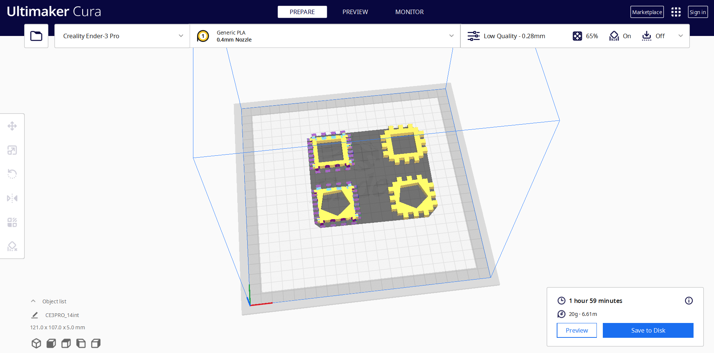

For this project I chose to do the 3D printing option.
I wanted to be able to change the size of the panel and number of tabs, so I made grasshopper program to do that. I started with a square and added boxes around it. The program actually makes two different types of panels that fit together to form the box. I also included an "interference" variable to adjust the width of of each tab.
The part where I struggled was with trimming the boxes and square so that where they overlapped wouldn't have a line. I could not figure out how to do that, so I had to remove the lines manually with each new iteration of my design.
Below is information and findings for each iteration of printing. Every trial was done on Low Quality with all default settings, aside from what is specified.
Trial 1
- Interference: 0
- Infill: 100%
- Top/Bottom Thickness: 0
- Special Feature: None
- Thoughts: For this first iteration I just wanted to see if my pieces would print properly. There was no interference on them so of course they didn't
fit together. I noted that they were very dense and heavy, so 100% infill might not be necessary.
- Interference: 0
- Infill: 100%
- Top/Bottom Thickness: 0
- Special Feature: None
- Thoughts: For this first iteration I just wanted to see if my pieces would print properly. There was no interference on them so of course they didn't fit together. I noted that they were very dense and heavy, so 100% infill might not be necessary.
This is how this trial was supposed to look:
And this is how it turned out
Trial 2
- Interference: 0.15mm
- Infill: 50%
- Top/Bottom Thickness: 0
- Special Feature: Attempt to print entirely hollow with 0.8 thickness around the edges in order to save time and filament. It didn't work.
- Thoughts: I tried to use what I had learned from my last attempt in this one. Unfortunately, my printer ran out of filament before the print was
able to finish. Luckly, it has printed enough that I could put the pieces together and know that I added too much interference. I also cut each piece
in half to see how it fit with itself. Again, too loose, and also I didn't like the pattern of the infill very much.
- Interference: 0.15mm
- Infill: 50%
- Top/Bottom Thickness: 0
- Special Feature: Attempt to print entirely hollow with 0.8 thickness around the edges in order to save time and filament. It didn't work.
- Thoughts: I tried to use what I had learned from my last attempt in this one. Unfortunately, my printer ran out of filament before the print was able to finish. Luckly, it has printed enough that I could put the pieces together and know that I added too much interference. I also cut each piece in half to see how it fit with itself. Again, too loose, and also I didn't like the pattern of the infill very much.
This is how this trial was supposed to look:
And this is how it turned out
Trial 3
- Interference: 0.14 mm
- Infill: 100%
- Top/Bottom Thickness: 0
- Special Feature: Large hole in middle to save time and filament
- Thoughts: I experimented with different combinations of the 0.14 intference and 0 interference pieces, and found the best combination to be
0.14 interference on the 4-tabbed panel, 0 interference on the tabbed panel.
- Interference: 0.14 mm
- Infill: 100%
- Top/Bottom Thickness: 0
- Special Feature: Large hole in middle to save time and filament
- Thoughts: I experimented with different combinations of the 0.14 intference and 0 interference pieces, and found the best combination to be 0.14 interference on the 4-tabbed panel, 0 interference on the tabbed panel.
This is how this trial was supposed to look:

And this is how it turned out
Catastrophic Event
So I woke up the next morning to find, as you just learned, a hube mess. But that's not even what was so catostrophic. The catostrophic part was that I picked up the two 0.14mm interference pieces I made in trial 3, put them together, and thought "What was I thinking? These are too loose. I need to do more interpherence trials clearly." I did not look at my notes and that is the explaination for what follows.
Trial 5
- Interference: 0.13mm and 0.12mm
- Infill: 65%
- Top/Bottom Thickness: 0
- Special Feature: Square hole in middle and pentagonal hole in middle.
- Thoughts: These pieces printed just fine, and I decided that the 0.12mm interence panels fit together better than the 0.13mm interference panels.
It did not occur to me, as it had the night before, that I could mix and match. So I decided that final thing I had to do was print 3 4-tabbed 0.12mm
interference panels and 3 3-tabbed 0.12mm interference panels. I also decided to go with the 65% infill, it did not looks as good but it would be a
lot faster.
- Interference: 0.13mm and 0.12mm
- Infill: 65%
- Top/Bottom Thickness: 0
- Special Feature: Square hole in middle and pentagonal hole in middle.
- Thoughts: These pieces printed just fine, and I decided that the 0.12mm interence panels fit together better than the 0.13mm interference panels. It did not occur to me, as it had the night before, that I could mix and match. So I decided that final thing I had to do was print 3 4-tabbed 0.12mm interference panels and 3 3-tabbed 0.12mm interference panels. I also decided to go with the 65% infill, it did not looks as good but it would be a lot faster.
This is how this trial was supposed to look:
And this is how it turned out
Trial 6
- Interference: 0.12mm
- Infill: 65%
- Top/Bottom Thickness: 0.1mm
- Special Feature: None
- Thoughts: In the last trial I had measured thickness of the newly printed panels and found them to each be around 0.1 or 02. For that reason I decided
to add a top and bottom thickness to this print. Unfortunately, I think that messed things up and the 0.14mm interference pieces won't go together very well.
But they do fit very nicely with the 0 interference panels, just like what I'd observed before and then forgot. I manage to squish something together.
- Interference: 0.12mm
- Infill: 65%
- Top/Bottom Thickness: 0.1mm
- Special Feature: None
- Thoughts: In the last trial I had measured thickness of the newly printed panels and found them to each be around 0.1 or 02. For that reason I decided to add a top and bottom thickness to this print. Unfortunately, I think that messed things up and the 0.14mm interference pieces won't go together very well. But they do fit very nicely with the 0 interference panels, just like what I'd observed before and then forgot. I manage to squish something together.
This is how this trial was supposed to look:
And this is how it turned out
Second Catastrophic Event
I am just now realizing I will need a third piece to go on the top and bottom of the cube so that it actually in enclosed.

Trial 7
- Interference: 0.15mm
- Infill: 65%
- Top/Bottom Thickness: 0
- Special Feature: Includes both 4 tabbed sides and 3 tabbed sides
- Thoughts: I opted to use 0.15 interference and 0 Top/Bottom thickness because the pieces salvaged from trial two fit nicely into the open-ended
cube I have created./li>
- Interference: 0.15mm
- Infill: 65%
- Top/Bottom Thickness: 0
- Special Feature: Includes both 4 tabbed sides and 3 tabbed sides
- Thoughts: I opted to use 0.15 interference and 0 Top/Bottom thickness because the pieces salvaged from trial two fit nicely into the open-ended cube I have created./li>
This is how this trial was supposed to look:

And this is how it turned out